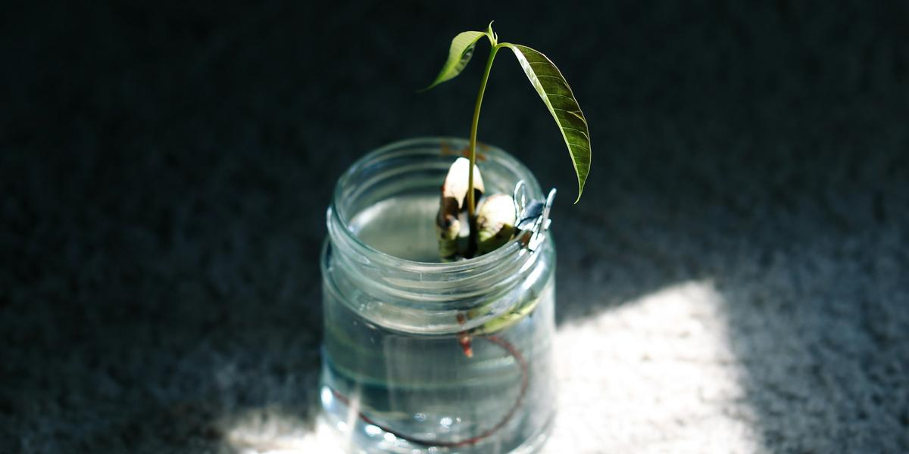

How to Grow Kratky Lettuce in a Mason Jar
This post may contain affiliate links. As an Amazon Associate I earn from qualifying purchases.
If you have a sunny windowsill and a mason jar, you have enough to start growing your own lettuce. The Kratky method is a "set it and mostly forget it" style of hydroponics developed and published by Dr. Bernard Kratky at the University of Hawaii. It uses no pumps, no air stones, and no electricity. That makes it a perfect first project for apartments, tiny homes, RVs, and anyone who wants to try growing clean food without buying a whole system.
This post walks through the whole process for a single jar. If you want a printable version, grab my free mini-guide on the home page, and when you are ready for more plants, the full book covers bigger setups.
How Kratky works, in one paragraph
A plant sits in a net pot just above a container of nutrient solution. At first, the bottom of the net pot touches the water, so the young roots can drink. As the plant grows, it drinks the water down. The water level drops, and the space between the lid and the water fills with air. The upper roots breathe in that moist air while the lower roots keep drinking. According to University of Hawaii publications on the method, that growing air gap is what lets the system work without an air pump. The key rule follows from it: do not top the jar back up to the original level once roots are established, or you drown the air roots.
What you need
- A wide-mouth quart mason jar (or larger)
- A net pot that fits the jar mouth (a 3-inch net pot fits many wide-mouth jars; measure yours)
- A starter plug such as a rockwool cube, plus a few clay pebbles to hold it in place
- Lettuce seeds; loose-leaf and butterhead types are forgiving
- Hydroponic nutrient made for leafy greens
- Something to block light: a sock, paper bag, paint, or duct tape
- Optional but helpful: a pH test kit or meter
Everything on that list is linked on my Gear page. You do not need anything fancy. A jar you already own works fine.
Step 1: Black out the jar
Light plus nutrient water equals algae. Algae competes with your roots and makes a slimy mess. Wrap the jar so no light reaches the water. Leave a small strip you can peel back if you want to check the level, or just lift the lid now and then.
Step 2: Start your seed
Rockwool usually needs a soak before use. University of Florida IFAS notes that most rockwool needs soaking in a pH-adjusted solution to reduce its natural alkalinity. Soak the cube, drop two or three seeds into the hole, and keep it moist and warm. Once seedlings appear, snip all but the strongest one. When you see roots poking out of the bottom of the cube, it is ready for the jar.
Step 3: Mix the nutrient solution
Follow the label on your nutrient for leafy greens. Every brand is different, so the label wins over anything you read online, including here. Mix it in clean water. If you have a pH kit, check it. University of Hawaii guidance recommends a pH range of about 5.5 to 6.5 for this kind of system. If you do not have a kit yet, that is okay for a first jar, but it is one of the cheapest upgrades you can make. My post on pH and EC/PPM explains the basics.
A tip from the published Kratky work: for seedlings and in hot weather, a milder solution is safer than a strong one. Start at the label's normal or lower strength rather than doubling it "to be safe."
Step 4: Fill and set the plant
Fill the jar so the water just touches the bottom of the net pot. Set the rockwool cube in the net pot and tuck a few clay pebbles around it so it stands upright. Put the lid or ring on. The cube should stay moist by wicking water upward.
Step 5: Give it light
Lettuce wants bright light. A south-facing window can work in cooler months. If your plant stretches tall and thin, it is asking for more light. A simple LED shop light on a timer fixes that. See choosing grow lights on a budget for how to pick one without overspending.
Step 6: Leave it alone (mostly)
This is the hard part. Watch the water level drop over the weeks. Look at the roots now and then: healthy roots are white or cream colored. If the water gets very low before the lettuce is ready, you can add a little nutrient solution, but only enough to reach the bottom of the roots, never back up to the original level. Keeping that air gap is the whole trick.
Step 7: Harvest
You can harvest outer leaves a few at a time, or cut the whole head. Loose-leaf types often keep producing if you leave the center intact. When you are done, rinse the jar, net pot, and pebbles, and you are ready to go again.
Common first-jar problems
- Green water or slime: light is getting in. Cover the jar better.
- Brown, slimy, smelly roots: this is often root rot, frequently linked to warm water or overfilling. See fixing root rot and algae.
- Leggy, pale plant: not enough light.
- Burnt leaf edges: the solution may be too strong or too warm. Try a milder mix next time.
- Seedling wilts after moving into the jar: the water may not be touching the cube. Check the starting level.
Is a jar too small?
A quart jar holds a limited amount of water, and a full-size head of lettuce drinks a lot. A bigger jar or a small opaque tote gives you more buffer. That matters most if your home runs warm, because a small volume of water heats up fast. If you are in Texas like me, read keeping reservoirs cool in a Texas summer before you start a jar in July.
Next steps
Once one jar works, try two or three with different lettuces, or add an herb like basil. When you want to start a jar every couple of weeks so you never run out, read succession planting for nonstop salad. The full book, The Soil-Free Farming Revolution, takes you from a single jar to totes, DWC buckets, and simple NFT channels.